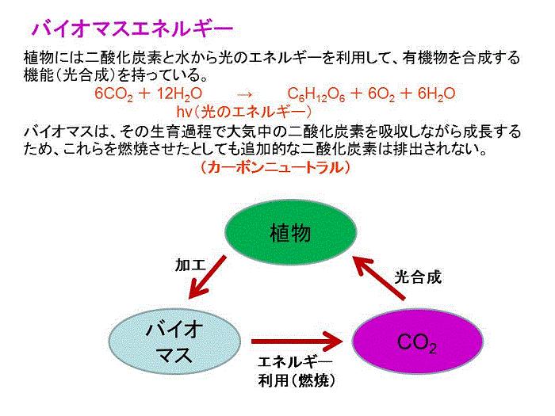

上のボタンをクリックして奈良県のバイオマスクイズに挑戦してみてください。
不正解であっても、やり直したり、解答を見たり、何度でも繰り返して、奈良県域市町村別のバイオマス状況に親しんでいただければと思います。
また、森林面積や人口から市町村別の二酸化炭素収支を評価し、ランキング（地球温暖化防止貢献度）をしてみたので地域の状況を確認してみてください。
なお、土地利用（国土数値情報）、植生（環境省生物多様性センター）、林業（農林業センサス）などのオープンデータを用いて、奈良県のすがたの見える化を行いましたので参考にして下さい。
